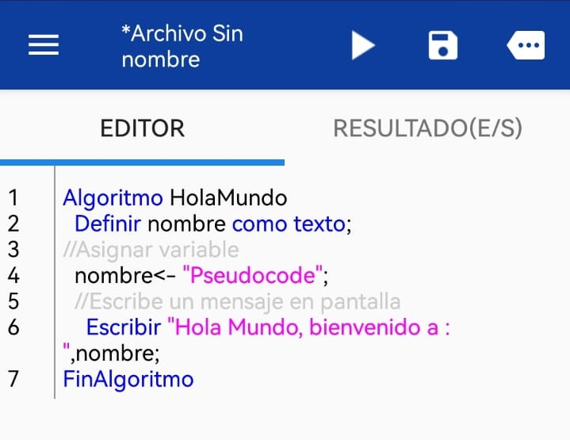
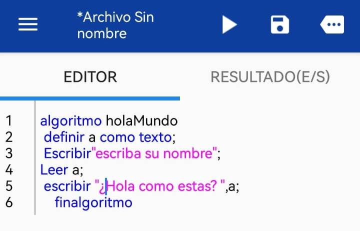
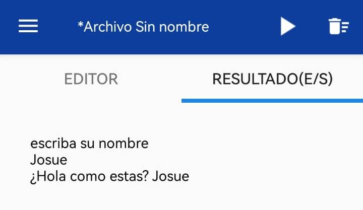
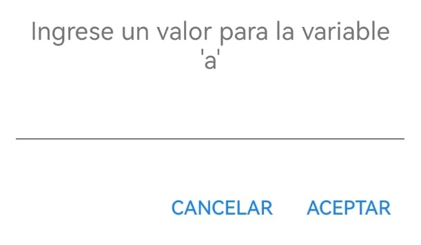

Escribir y Leer en Pseudocode
Escribir: Me permite mandar mensajes al usuario ya sea creados por uno o el valor de una variable.
Ejemplo # 1:

La estructura básica del pseudocódigo que mencionas se compone de dos partes fundamentales: Algoritmo y FinAlgoritmo. Entre estas palabras clave es donde se encuentra la secuencia de instrucciones que describe el algoritmo a seguir. A continuación, te explico el ejemplo que mencionaste:
- Algoritmo: Es la palabra clave que inicia la definición de nuestro algoritmo.
FinAlgoritmo: Es la palabra clave que indica el final del algoritmo.
En el ejemplo que diste, se realiza lo siguiente: - Se define una variable llamada "texto" en la línea 3 del pseudocódigo.
En la línea 4, se asigna a la variable "texto" el valor de "(pseudocódigo)".
Luego, se utiliza la instrucción "Escribir" seguida de un mensaje entre comillas, que en este caso es un mensaje estático o fijo que dice "El valor es: ". - Finalmente, se imprime en pantalla el valor de la variable "texto", que en este caso sería "(pseudocódigo)".
Esta estructura básica y estos elementos componen la base de la escritura de pseudocódigo para describir algoritmos de una manera sencilla y comprensible antes de ser implementados en un lenguaje de programación específico.
Leer: Me permite captar informaciòn del usuario como ejemplo el dato que pide.
Ejemplo #2

Claro, en el ejemplo #2, cuando solicitamos al usuario que introduzca su nombre y luego lo mostramos, estamos realizando una operación básica de entrada y salida de datos. Aquí te muestro cómo se podría redactar este proceso:
Solicitamos al usuario que introduzca su nombre.
El usuario introduce su nombre.
Mostramos en pantalla el nombre introducido por el usuario.
Ejemplo de interacción:Sistema: Por favor, introduce tu nombre.
Usuario: Josue.
Sistema: ¿Hola como estas?, Josue
En este caso, el sistema solicita al usuario su nombre, el usuario introduce el nombre "Josue", y el sistema muestra en pantalla el saludo "¿Hola como estas?j," Josue. Es un ejemplo sencillo de cómo se puede captar información del usuario y mostrarla a través de un programa o aplicación.
